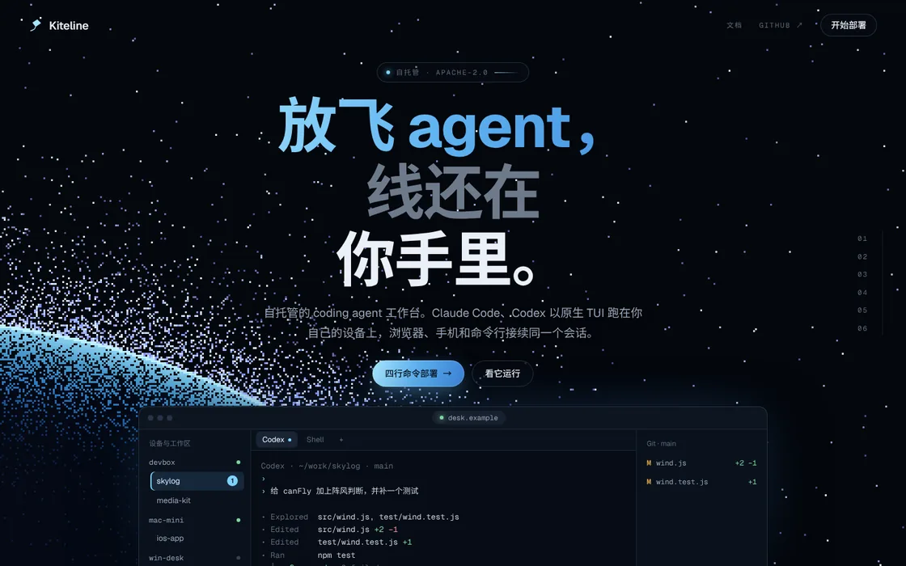
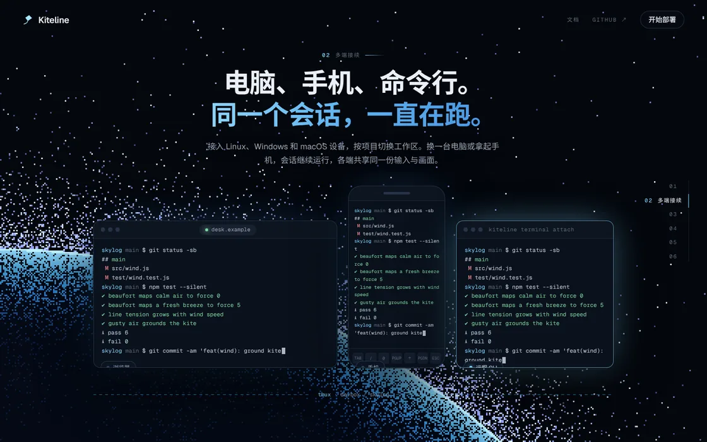
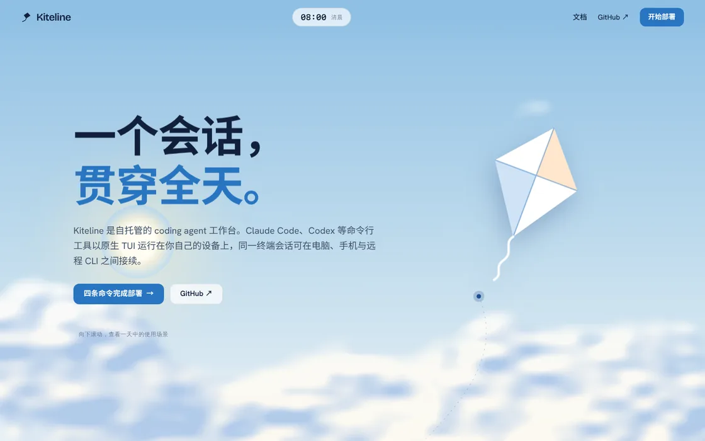
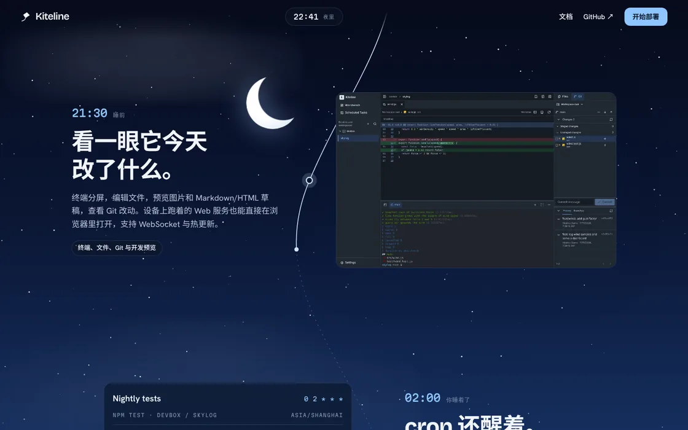

A · NIGHT FLIGHT
夜航
贴近 Tern 的做法：深色，一屏一幕，滚轮把六个分镜依次推上来。
- 背景
- 像素抖动的夜空地平线，随滚动转动，最后一幕升起
- 演示
- 页面内画出的工作台和终端，回放真实命令；三端同步输入
- 气质
- 硬朗、技术感强，等宽小字和编号导航
三个方向，内容和配色来源相同，版式与动效不同。每一版都是可以完整滚动、交互的页面；页面底部的切换条可以在三版之间跳转，也可以切换中英文。


贴近 Tern 的做法：深色，一屏一幕，滚轮把六个分镜依次推上来。


贴近 Trajectory 的做法：浅色，一片画出来的天空，白色内容页从上面滑过。


一个不照搬参考站的方向：把用它的一天从早讲到晚，滚动就是拨动时钟。
从 rainng.com 取色：导航栏、链接、头图天空和页面背景的蓝。三版都只在这组蓝上加了少量暖色做高光。